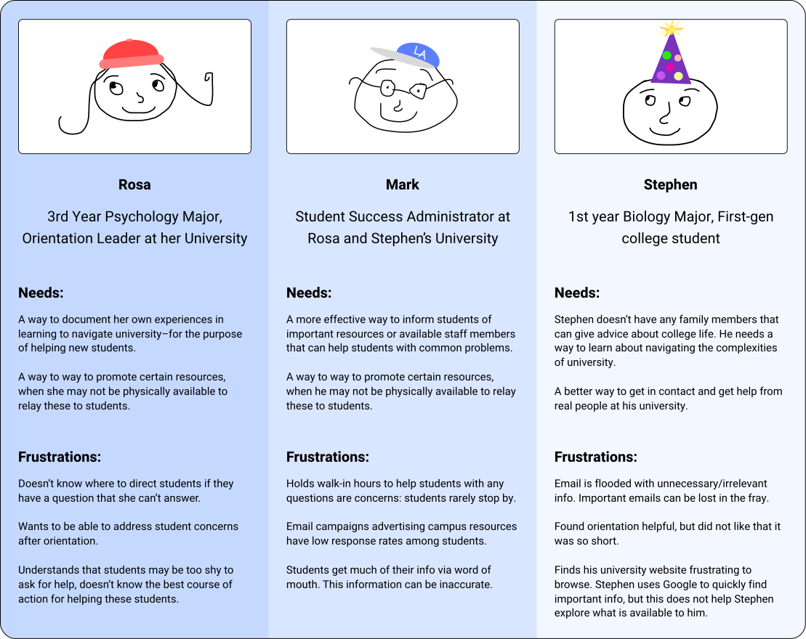
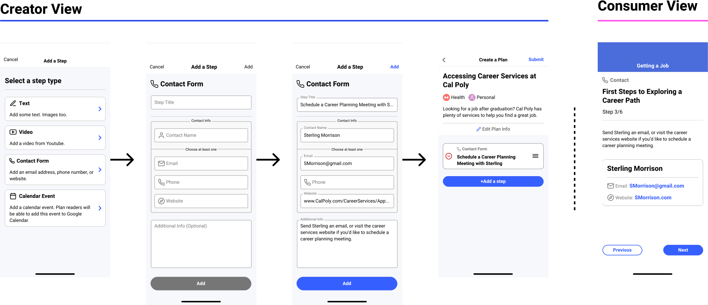

| Goal | Design a plan creation tool (PCT) that allows users to create-step-by-step action plans from their mobile devices |
| Process |
|
| Team | This was a solo UX project. I received feedback from company stakeholders (CEO and Director of Ops) |
| Timeline | About two months |
| Stakeholder Requests |
|
Research
Beyond considering the needs of plan creators, I felt that understanding the needs of plan consumers (university students) should inform the structure of the PCT. This way, I could design the PCT so that plan creators can more easily create plans that align with consumer needs.
Interviews
I talked to students and advisors from three private universities in Nova Scotia, and two public universities in California.
I conducted one-on-one interviews, and led a focus group consisting of peer leaders at one of the schools in Nova Scotia.
Following these interviews, I conducted a literature review to ensure that my findings from these schools would apply to other univerisities.
Findings, Insights
| I found that... | Therefore... |
|---|---|
| Students find their school's resources helpful, but often don't realize that the school offers
resources that may help them. Students and staff across the board express frustration with their university's web infrastructure and find themselves inundated with irrelevant emails. |
Allow for plans concerning general wellbeing, but prioritize the creation of plans that relate to the accessing of university-specific resources. |
| Students feel a greater sense of belonging on campus when they are connected to real people. | Build the PCT to incentivize the creation of plans that get students in contact with real people. |
| Students have their own systems of organization, but these don't "play nice" with how their universities distribute information. | Allow users to easily integrate information from plans into their existing organizational systems – Apple Maps, Google Calendar, etc. |
Models
I created personas:
In addition to creating traditional user journey maps, I created a plan journey map. I felt this more accurately reflected the fact that creator needs are inherently informed by consumer needs.

Gathering Requirements
Inspired by Alan Cooper's About Face, I assembled a list of the data and functional needs of both creators and consumers and listed relevant input and output methods.
Consumer Needs
I referred to interview notes and browsed some university websites to determine the data objects required by students.
Creator Needs
To define creator needs, I broke down the information architecture of courses provided by Khan Academy and Coursera. This helped me create three distinct functional groups:
Plan info
Describes the plan.
Plan structure
The overall structure and organization of steps.
Writing steps
The individual steps that make up a plan.


Initial Ideation
I made a series of sketches, then brought these to management and the dev team to decide on a single, technically feasible version.
Sketching functional views
I sketched a few variations of each functional group, then organized these groups into user flows.

Making Decisions
I discussed technical feasibility with our dev team – it was decided that they would handle the entirety of rich text input for authoring steps.
After bringing these to my CEO and PM and doing some hallway testing, we decided on an eventual flow to build upon. We further agreed that steps should be built to only allow for text content due to time and budget constraints.
Refinement
After deciding on a single flow, I looked to make a high fidelity version to pass off to the dev team.
Considering Constraints
While it had been decided to leave step creation as a text-only process, I felt that the use of constraints would help plan creators make plans that work for consumers.
I made some more hi fi sketches of flows in which plan creators are constrained to one action per step. I felt that constraining each step in this manner would decrease cognitive overload, compared to if creators were to be given free reign over steps.
This particular iteration demonstrates a more templatized version of step creation.
Making Cards
I personally feel this was the weakest part of this project. I had spent too much time thinking about the system and had little time to make hi fi wireframes due to the deadline imposed by an upcoming conference.

Final Steps
After finalizing the look and feel, I worked with the dev team to bring the PCT into the TREES mobile app.
Handoff
I made a click-through prototype of the interface and made a more detailed wireflow to pass off to the devs.

After passing these documents off, I continued to work with the development team to fix bugs and correct any misunderstandings about plan creation operations.
Impact
The introduction of the PCT lead to a negligable increase in created plans.
In hindsight, I would have liked to include some sort of onboarding or segue into plan creation.
Post Development
After the PCT had been built, the company ceased development efforts to save money. I felt that the inclusion of data objects (contact info, calendar events, etc.) would greatly increase the quality of plans, and looked for ways to add them to action plans using existing infrastructure.
While looking through the company's web API, I found that the text fields that contain step content could read html tags. While this functionality could not be accessed from the mobile app, I was able to add cards for that allowed users to:
- Open webpages in iFrames
- View an address in the user's default map application.
- Open the user's default email app to send emails to a specific recipient.
- Call a phone number.
- Add events to a user's Google Calendar
While app users wouldn't be able to access these, I was able to make some custom plans for a university admin I previously interviewed.
Reflections
The PCT was my first major design project, and was built without the guidance of a more experienced designer. While I'm glad I had the opportunity to build a new feature from scratch and bring it all the way to development, there are many things I wish I had done differently.
Improving Visual Design
My visual design was entirely too novel. As I feel that visual design is the weakest link in my UX toolkit, I've been looking to Google Material and Apple's Interface Guidelines to learn more about industry trends and general tips to improve the look and feel of my future designs.
Improving Time Management
I spent entirely too much time conducting research and nailing down the data and functional requirements of users, which left little room for sketching and visual design. Since this was my first time building myself a sprint from scratch, I feel more confident that I will be able to speed up this process in the future.
Usability Improvements
While I didn't conduct formal testing, I was able to gain feedback by showing my designs to a few friends.
If we had the budget to make edits to the PCT, I would have made the following changes:
- Make initialization one item at a time (Title, Description, Category) instead of all on a single screen.
- Including more feedback — adding some indicator that a step was succesfully created.
- Informing the user about the moderation process before submitting a plan.